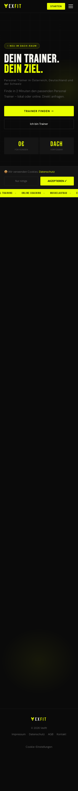
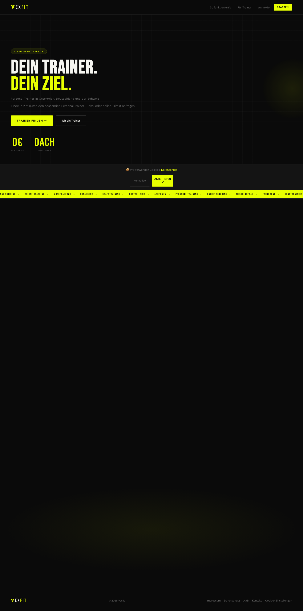
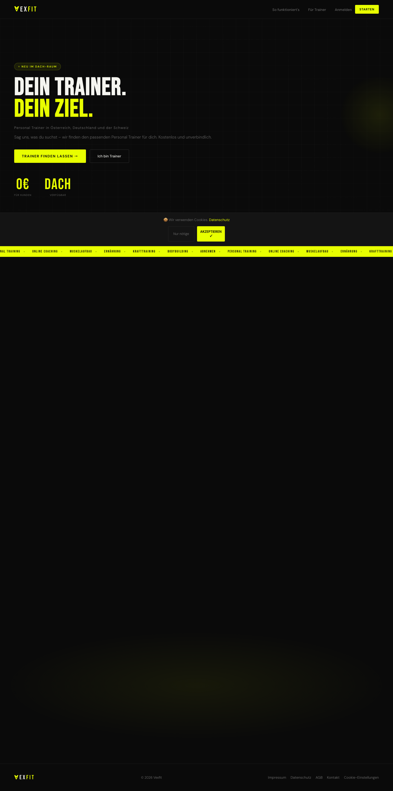
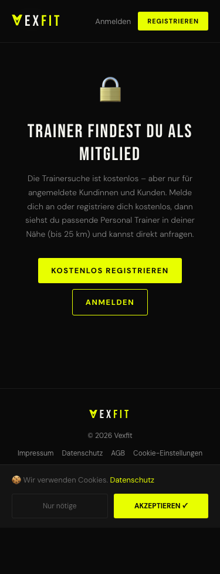
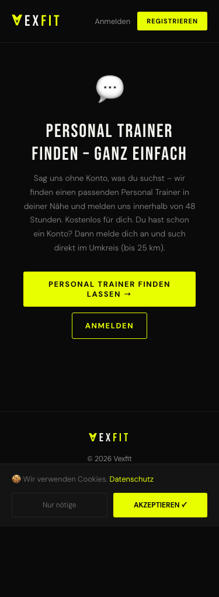
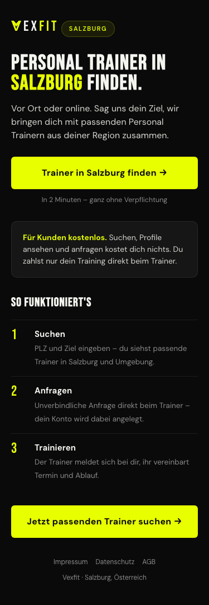
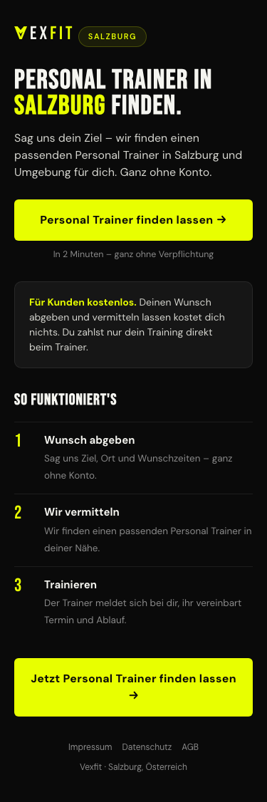
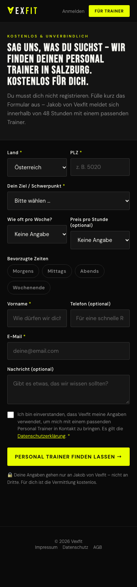
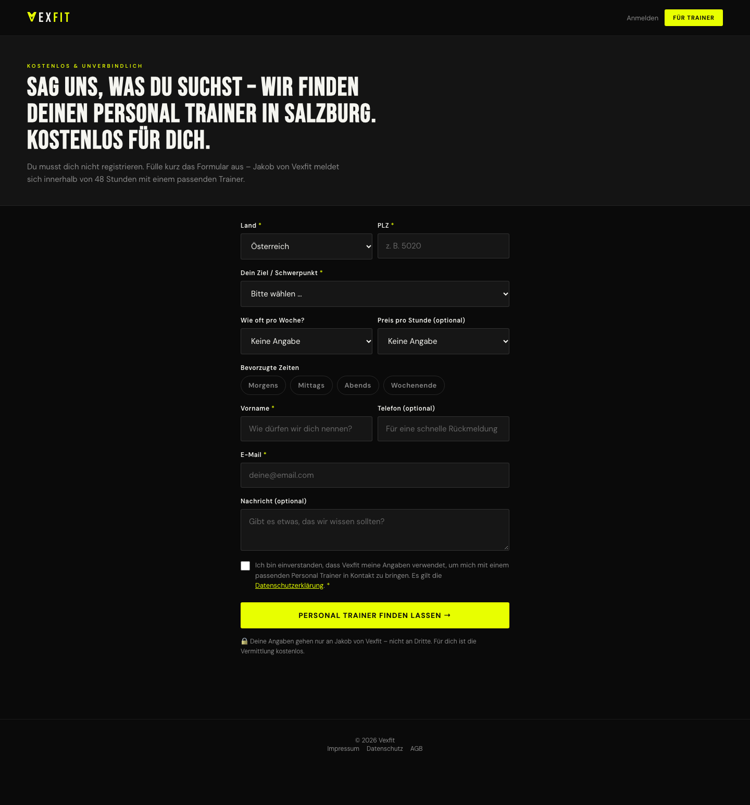

Umbau der öffentlichen Kunden-Einstiege auf das neue Wunsch-Formular
(/wunsch.html, kein Konto nötig). Screenshots mit Playwright/Chromium bei 375 px
(Handy) und 1440 px (Desktop). „Vorher" = Stand dc5f884, „Nachher" =
dieser Lauf. Hinweis: die Startseite blendet Abschnitte erst beim Scrollen ein –
im Vollseiten-Screenshot bleibt darunter schwarz, das ist kein Fehler.
Hero-Text ehrlich (kein „lokal oder online"), Kunden-CTA „Trainer finden lassen" → /wunsch.html, 3 Schritte neu (Wunsch abgeben → Wir vermitteln → Loslegen).

Gleiche Änderungen, Desktop-Ansicht.


Das Anon-Gate bietet jetzt den Haupt-Knopf „Personal Trainer finden lassen" → /wunsch.html (statt nur Registrieren/Anmelden).


Beide CTAs → /wunsch.html (mit PLZ/Land), Lead/Schritte ohne „oder online".


Die neue Landingpage: Interessent gibt ohne Konto seinen Wunsch ab. Es gab vorher keine solche Seite.

